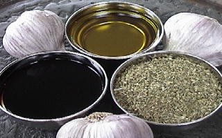

ITALIAN VINAIGRETTE SALAD DRESSING
- 4 CUPS SALAD OR VEGETABLE MIX
- 2 tsp. DRIED OREGANO
- 1 CLOVE GARLIC - MINCED
- 1 TBS. GRATED PARMESAN CHEESE
- 2 tsp. RED WINE VINEGAR
- 2 tsp. BALSAMIC VINEGAR
- 2 TBS. OLIVE OIL
- 1 PINCH SALT
- BLACK PEPPER TO TASTE
PLACE YOUR SALAD MIX IN A MEDIUM MIXING BOWL AND TOP WITH THE OREGANO, GARLIC, AND CHEESE. TOSS WELL, THEN ADD THE VINEGARS, OLIVE OIL, FRESHLY GROUND BLACK PEPPER AND SALT. TOSS AGAIN, TASTE AND ADJUST SEASONINGS AS DESIRED. SERVE IMMEDIATELY.
NOTE: PLACE FORKS IN SALAD BOWL AND ENJOY WITH THE ONES THAT YOU LOVE.
MAKES APPROX. 2 SERVINGS.